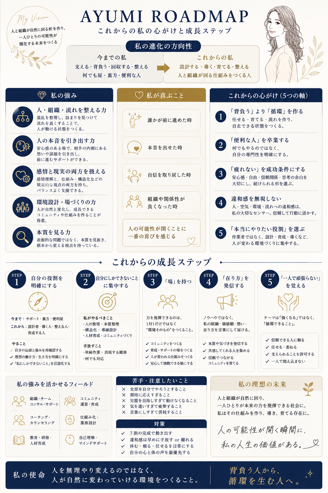
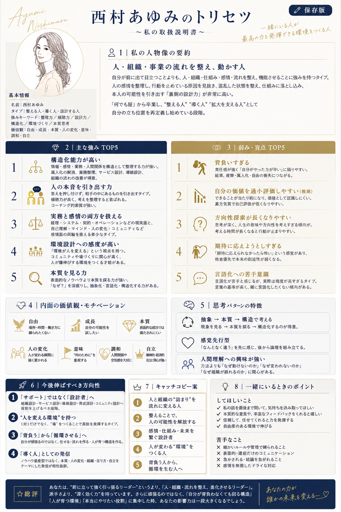
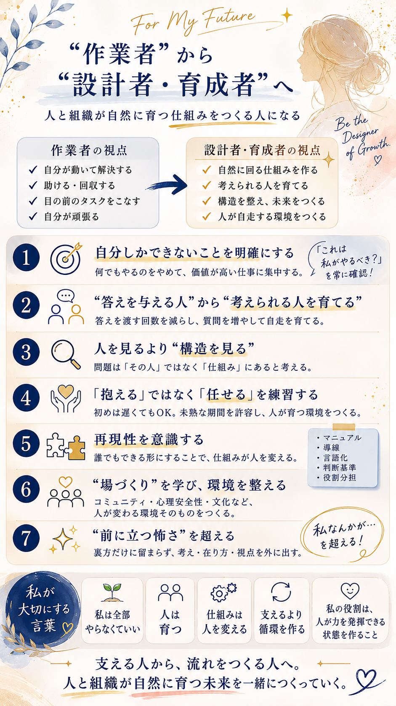
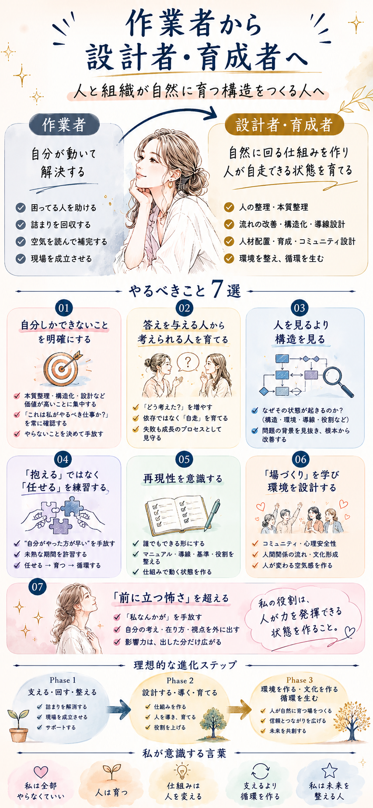

人と組織が自然に回る状態を作り、
一人ひとりの可能性が
開花する未来をつくる。
人を無理やり変えるのではなく、
人が自然に変わっていける
環境をつくること。
人と組織が自然に育つ仕組みをつくる人になる
何でもやるのをやめて、価値が高い仕事に集中する。「これは私がやるべき？」を常に確認する。
答えを渡す回数を減らし、質問を増やして自走を育てる。失敗も成長のプロセスとして見守る。
問題は「その人」ではなく「仕組み」にあると考える。なぜその状態が起きるのか、背景から改善する。
初めは遅くてもOK。未熟な期間を許容し、任せる → 育つ → 循環する、の流れをつくる。
誰でもできる形にすることで、仕組みが人を変える。マニュアル・導線・言語化・判断基準・役割分担を整える。
コミュニティ・心理安全性・文化など、人が変わる環境そのものをつくる。
裏方だけに留まらず、考え・在り方・視点を外に出す。「私なんかが…」を超えることで、影響力は出した分だけ広がる。
混乱を整理し、詰まりを見つけて流れを良くする。人が動ける状態をつくることが得意。
安心感のある場で、相手の内側にある想いを引き出し、前に進むサポートができる。
経理・契約などの現実面と、マインド・人の変化への関心を両方持つ希少なタイプ。
「環境が人を変える」という視点を持ち、人が自然と成長できる仕組みをつくることが得意。
表面的な問題ではなく、「なぜ？」を深く掘り下げ、根本から変える視点を持つ。



